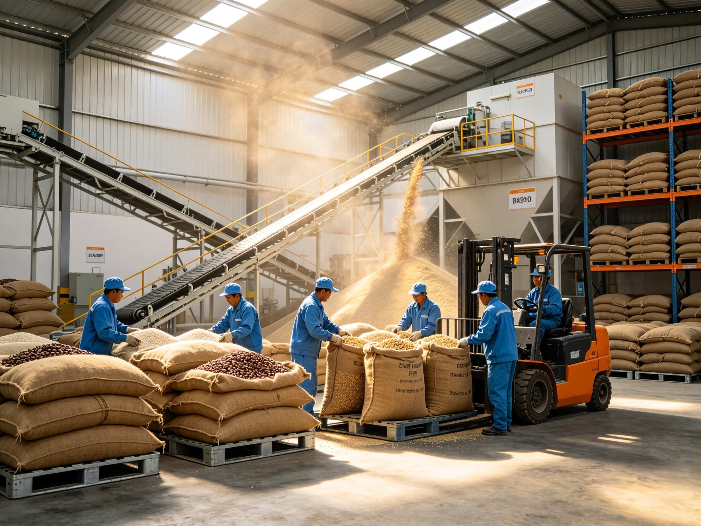
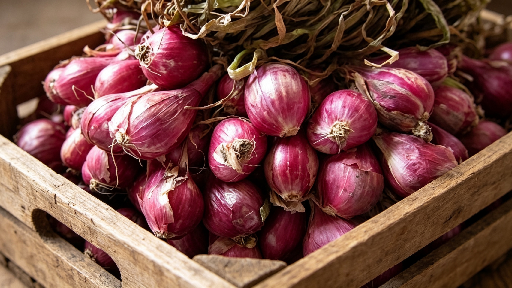
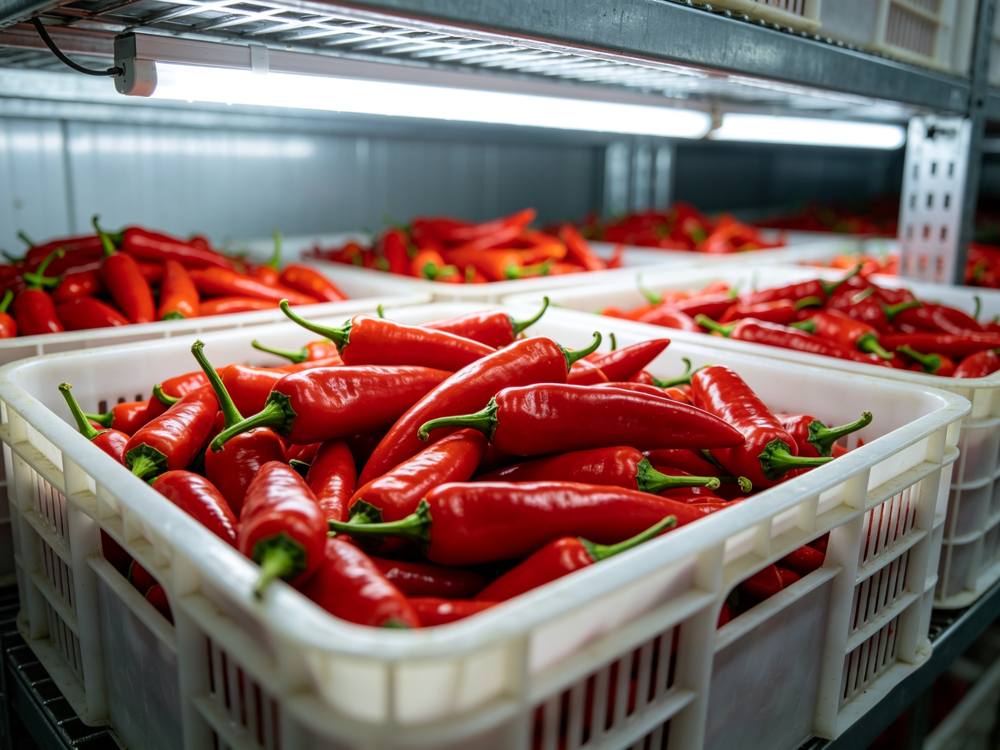
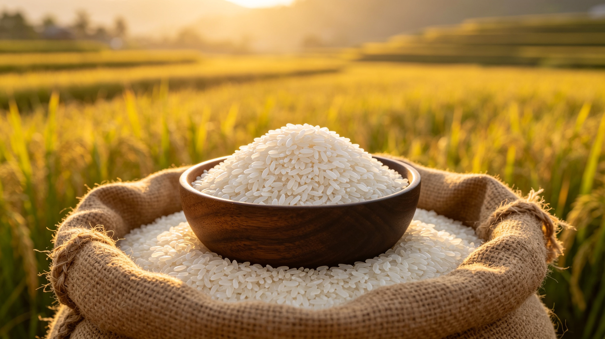
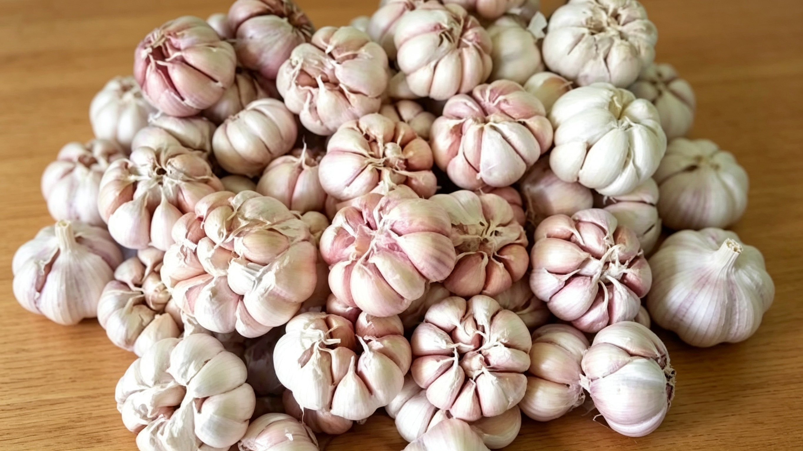
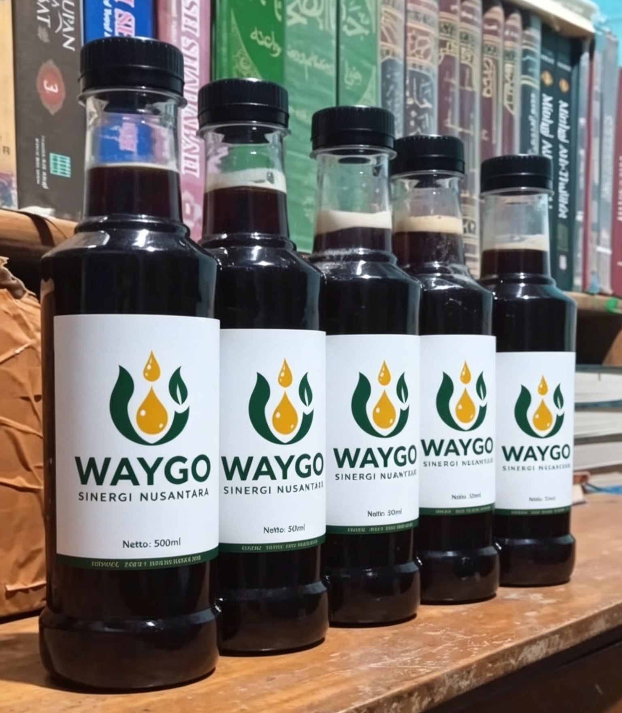
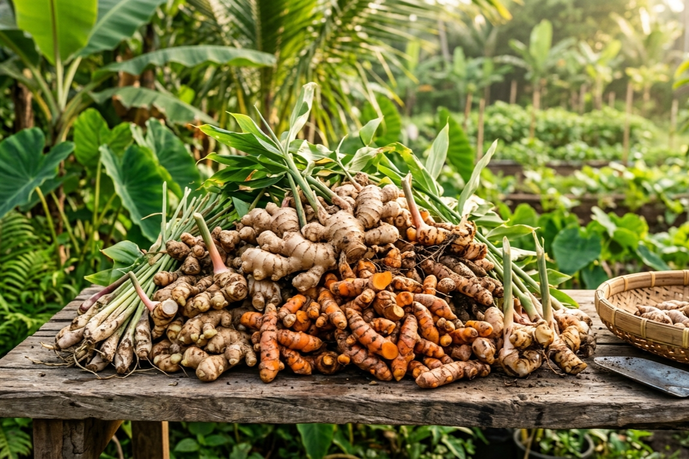

PT Waygo Sinergi Nusantara hadir dengan misi radikal: Menghapus lapisan perantara tengkulak yang merugikan. Kami mengambil Bawang Merah, Jagung Kering, Cabai, dan Beras langsung dari tangan gabungan kelompok tani, memastikan pasokan bervolume masif mengalir langsung ke pabrik pengolahan Anda dengan efisiensi harga maksimal.

Menghilangkan lima lapis perantara tradisional. Barang mengalir lurus dari lahan sentra menuju pabrik manufaktur Anda.
Bagi pabrik pengolahan makanan, restoran waralaba raksasa, dan eksportir, tantangan terbesar di Indonesia bukanlah ketersediaan lahan, melainkan fragmentasi pasokan. Membeli bahan baku dari tengkulak berarti menerima risiko kualitas yang dicampur aduk, kadar air yang tidak stabil, dan harga yang membengkak karena margin perantara.
PT Waygo Sinergi Nusantara hadir untuk memotong kompas tersebut. Berakar kuat di sentra agrikultur Jawa Tengah dan wilayah sekitarnya, kami membangun infrastruktur penyortiran dan gudang langsung di dekat lumbung panen utama.
Kami turun ke lapangan. Waygo bermitra dengan pemimpin Gapoktan (Gabungan Kelompok Tani). Kami menyerap Bawang Merah dari Brebes, Jagung dari dataran rendah, hingga Cabai segar. Kami menstandardisasi ukurannya, menurunkan kadar airnya dengan mesin pengering, dan menyajikannya dalam volume tonase siap kontrak untuk perusahaan Anda.
Menyediakan akses langsung ke komoditas pokok paling vital di Indonesia, diproses dengan standarisasi presisi untuk kebutuhan pabrikasi massal.

Komoditas kebanggaan yang menjadi nyawa industri bumbu (seasoning) dan F&B nasional. PT Waygo beroperasi di jantung sentra produksi Brebes, mengumpulkan bawang merah langsung dari lahan. Kami melakukan proses penjemuran (curing) yang tepat untuk memperpanjang umur simpan, menyortir ukuran dengan ketat, dan memisahkan kotoran tanah sebelum pengemasan.
| Kaliber Ukuran | Super Cross, Super, Medium, atau Ekstra Kecil (sesuai pesanan pabrik) |
| Kadar Air (Moisture) | Kering Simpan / Kering Askip (Low Moisture) |
| Packaging Setup | Karung Jaring (Mesh Bags) 20kg - 25kg / Ventilated Sacks |

Tulang punggung industri saus, sambal botolan, dan pengolahan makanan instan. Mengelola cabai membutuhkan kecepatan logistik ekstrem (Cold Chain Logistics) untuk mencegah pembusukan. Kami memiliki armada pengumpul harian yang mengevakuasi panen cabai dari dataran tinggi untuk segera disortir dari tangkai dan didistribusikan dalam hitungan jam ke fasilitas produksi klien.
| Kondisi Barang | Segar, Petik Merah (Red Index > 90 persen) |
| Sortasi Kualitas | Bebas Patek (Antraknosa), Bebas Tangkai (sesuai kontrak) |
| Packaging Setup | Keranjang Plastik Berventilasi / Kotak Karton Berlubang |
Komoditas curah bervolume masif yang dirancang untuk memasok pabrik pakan ternak (Feedmill) raksasa dan pabrik ekstraksi pemanis buatan. Jagung yang kami agregasi langsung dipipil dan dimasukkan ke dalam silo pengering raksasa untuk menekan kadar air dan menyingkirkan risiko tumbuhnya jamur Aflatoksin. Kami menjamin pasokan stabil hingga ribuan ton per bulan.
| Kadar Air (Moisture) | Maksimal 14 Persen (Standard Feedmill) |
| Biji Rusak (Broken/Damaged) | Maksimal 3 - 5 Persen |
| Packaging Setup | Karung PP 50kg / Curah Dalam Truk Dump (Loose Bulk) |

Kami bermitra erat dengan sentra penggilingan padi (Rice Milling Units) modern di sentra lumbung padi nasional. PT Waygo menyuplai Beras Putih dengan rasio patahan (broken grains) yang sangat presisi, ditujukan untuk pengadaan jaringan ritel supermarket berskala besar, katering industri, dan program pasokan pangan korporat.
| Persentase Patahan (Broken) | Premium Maks 5 Persen / Medium Maks 15 Persen |
| Derajat Sosoh | Minimum 95 Persen |
| Packaging Setup | Karung Plastik PP 5kg, 10kg, 25kg, hingga 50kg |

Menyediakan bawang putih siung besar kualitas super, bersih dari akar dan kotoran. Kami mengagregasi volume dari petani lokal maupun melakukan konsolidasi kuota impor resmi untuk menstabilkan harga bagi pabrik pengolahan bumbu kering dan saus yang menuntut kepastian harga sepanjang tahun.
| Grade Sortasi | A / B (Sesuai Permintaan) |
| Kondisi Fisik | Utuh, Bersih, Kering Permukaan |
| Kemasan | Mesh Bags 10kg - 20kg |

Menyediakan pasokan Madu Murni bersertifikasi SNI dan ekstrak getah alam (seperti Damar/Kemenyan) bebas dari adulterasi (pemalsuan gula). Komoditas cairan ini dikurasi khusus untuk pabrikan kosmetik, farmasi, dan produsen minuman kesehatan dengan pengujian laboratorium ketat sebelum dimasukkan ke dalam drum baja.
| Jaminan Kualitas | Lulus Uji Lab Independen |
| Kadar Air Madu | Maksimal 22 % |
| Kemasan jerigen | Food Grade Jerigen 25 kg |

Dirancang khusus untuk memenuhi kriteria ketat industri farmasi (jamu/herbal modern), ekstraksi minyak atsiri (essential oils), dan manufaktur kosmetik. Kami menyuplai bahan baku alam unggulan seperti Jahe Gajah, Jahe Merah, Kunyit, Temulawak, Serai Wangi, hingga Cengkeh bersortasi maksimal. Seluruh penanganan pasca-panen menggunakan standar kebersihan (hygiene) tinggi dan teknik pengeringan presisi demi menjaga agar senyawa aktif (seperti curcumin) dan kadar minyak atsiri tetap utuh saat tiba di pabrik ekstraksi Anda.
| Bentuk Pemrosesan | Kering Rajang (Simplisia), Serbuk (Powder), atau Utuh |
| Standar Mutu | Bebas Fungi (Jamur) & Kontaminasi Silang, Kadar Air Maks 10-12% |
| Packaging Setup | Karung Plastik Berlapis / Vacuum Bag / Kotak Karton Berongga |
Dari lahan ladang berlumpur menuju ruang produksi steril pabrik Anda. Berikut adalah cetak biru PT Waygo Sinergi mengamankan suplai tanpa melibatkan rantai perantara tak berizin.
Kami melakukan transaksi persis di pinggir ladang panen. Pembayaran tunai kepada koperasi atau Gapoktan memastikan petani mendapatkan harga maksimal, sekaligus memberi kami hak eksklusif memborong seluruh tonase panen sebelum dibajak oleh calo pasar.
Muatan dari ladang dipindahkan via truk kecil ke gudang konsolidasi (*Regional Hub*) kami yang tersebar di lumbung daerah. Di sinilah proses pembersihan awal terjadi: memisahkan tanah, daun basah, dan kotoran ladang untuk mencegah pembusukan massal.
Puluhan ton masuk ke fasilitas sentral kami. Pengeringan mekanik menyusutkan kadar air, mesin pengayak memisahkan ukuran menjadi *Grade* A/B/C yang seragam, dan tim kontrol kualitas memilah barang cacat. Barang mentah berubah menjadi bahan baku kelas pabrik yang presisi.
Penimbangan akhir terkomputerisasi. Barang dikemas secara profesional dan dinaikkan ke armada truk tronton tertutup atau kontainer kapal. Waygo memfasilitasi pengiriman hingga tiba tepat di pintu penerimaan barang (Receiving Bay) pabrik Anda dengan jadwal presisi.
Panduan lengkap mengenai kebijakan tonase, manajemen risiko fluktuasi harga, dan garansi kualitas untuk kontrak suplai korporasi besar.
Saluran komunikasi resmi bagi manajer pembelian korporat (Procurement Manager). Silakan ajukan rincian volume bulanan komoditas yang pabrik Anda butuhkan. Tim Trade Desk PT Waygo akan menyusun Full Corporate Offer secara tertulis.
Tindakan Pencegahan Hama Antarnegara: Seluruh kargo agrikultur ekspor PT Waygo Sinergi Nusantara diwajibkan melewati prosedur fumigasi bersertifikat resmi sebelum pemuatan ke dalam lambung kapal kargo laut. Ini difungsikan untuk meredam potensi kontaminasi biologis dan penyebaran hama lintas batas negara secara total. Dokumen Phytosanitary Certificate, Bill of Lading mutlak, dan Form Certificate of Origin akan selalu diserahkan penuh secara transparan kepada pembeli.
Penolakan Risiko Perdagangan: Komoditas hasil panen bumi menyimpan risiko bawaan terhadap anomali iklim ekstrem secara natural. Rincian pasokan kapasitas, besaran harga penawaran awal, dan kalkulasi waktu penyerahan yang dikomunikasikan via saluran informal tidaklah mengikat secara hukum legal. Volume suplai final dan garansi tarif perdagangan hanya sah divalidasi apabila telah terjadi penandatanganan dokumen Sales and Purchase Agreement (SPA) berbadan hukum serta penerbitan Letter of Credit dari bank koresponden.